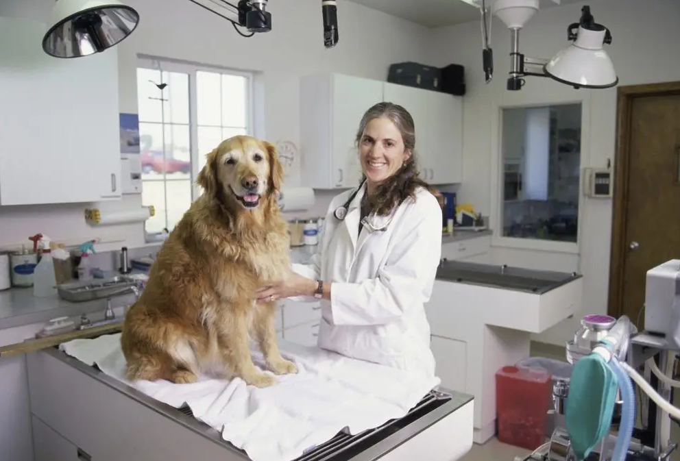
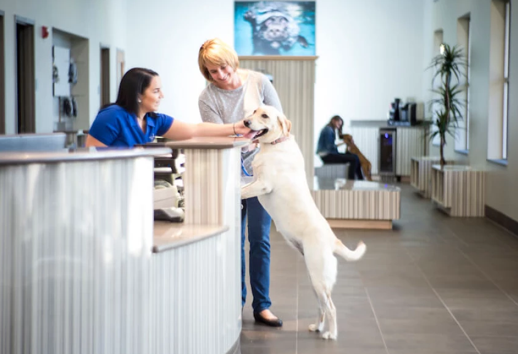

SERVICIOS

3 Consultorios de atención simultáneas para revisiones generales, diagnóstico y controles.

Consultas y vacunación a domicilio, el mismo servicio con la comodidad de no trasladar a la mascota hacia nuestra clínica.

Electrocardiograma, interconsultas con Médicos Veterinarios especialistas en Cardiología. Servicio de odontología, limpieza de dientes por ultrasonido.